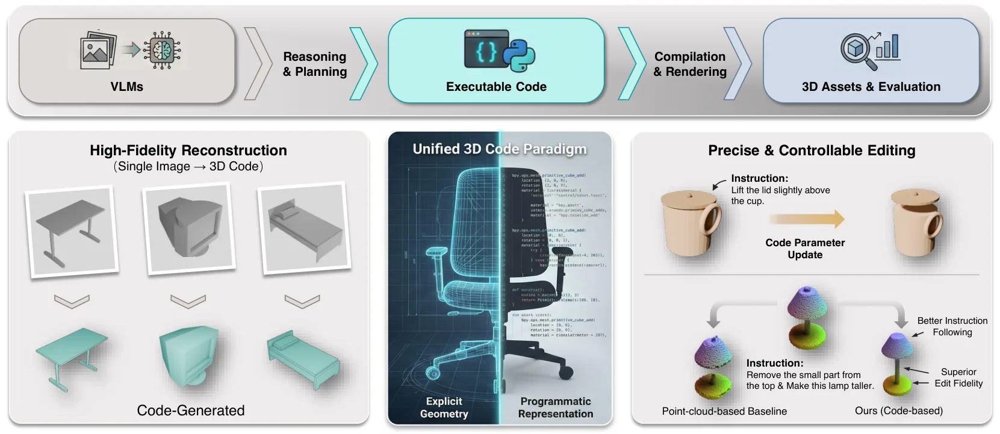
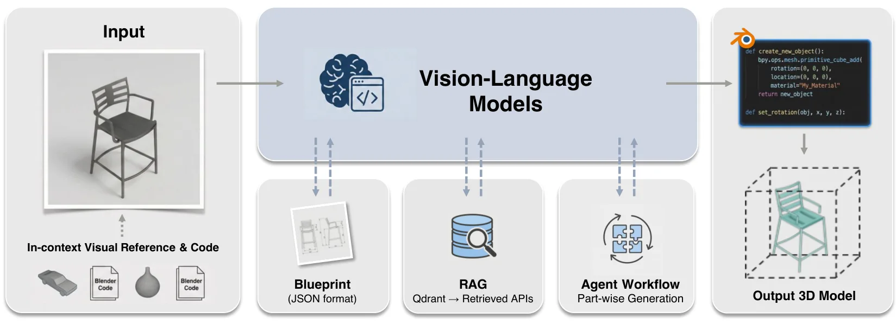
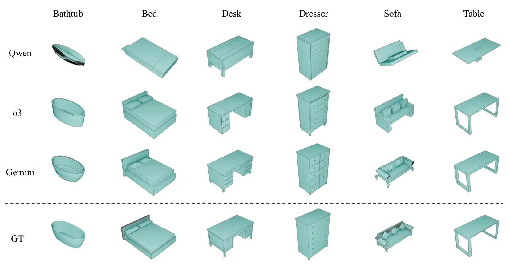
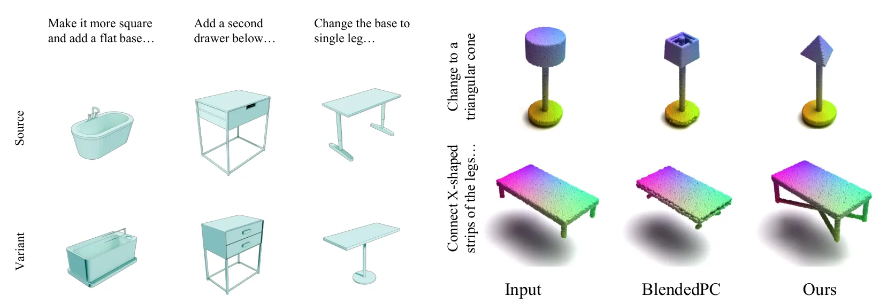
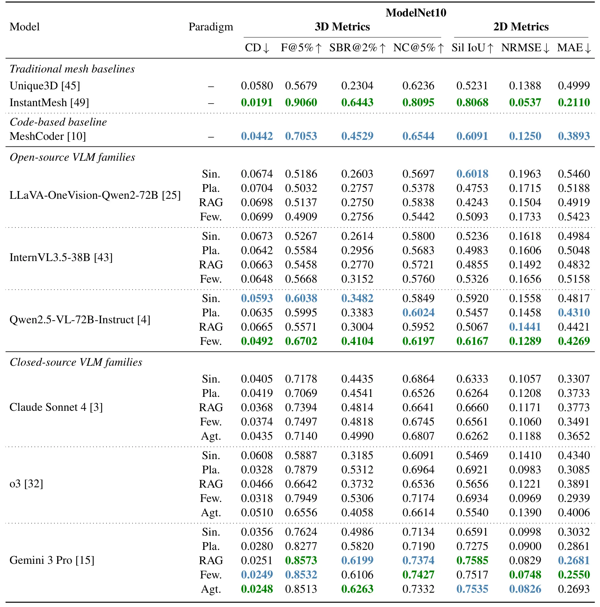

3D-CoS：基于 VLM 代码合成的三维重建新范式3D-CoS: A New 3D Reconstruction Paradigm Based on VLM Code Synthesis
不是 SLAM 几何核心，但对重建结果转可编辑数字孪生/仿真资产有启发；需关注与真实扫描数据的结合能力。
一句话工作总结
3D-CoS 把三维重建转成 VLM 生成 Blender 代码的问题，强调程序化可控与局部编辑。
摘要
近期三维重建和编辑系统多使用 NeRF、点云、网格等隐式或显式低层表示，这些表示能高保真渲染，却很难进行程序化控制。3D-CoS 提出把三维资产构造为可执行 Blender 代码的 3D Code Synthesis 范式，并系统评估当前开源和闭源 VLM 在代码式三维重建中的能力。作者还引入多种结构化代码合成流程，包括 blueprint-based planning、基于 Blender API 文档的 RAG、few-shot 几何示例，以及 component-level agent 工作流。实验显示，代码表示在局部文本编辑中具有更强可控性和局部性，能更好保持未编辑区域。
Most recent 3D reconstruction and editing systems operate on implicit and explicit representations such as NeRF, point clouds, or meshes. While these representations enable high-fidelity rendering, they are fundamentally low-level and hard to control programmatically. In contrast, we propose and systematically evaluate a new 3D reconstruction paradigm, 3D Code Synthesis (3D-CoS), where 3D assets are constructed as executable Blender code, a programmatic and interpretable medium. To assess how well current VLMs can use code to represent 3D objects, we evaluate representative open-source and closed-source VLMs in code-based reconstruction under a unified protocol. We further introduce a suite of structured code-synthesis workflows, including blueprint-based planning, Retrieval-Augmented Generation (RAG) over Blender API documentation, few-shot geometric demonstrations, and a component-level Agent workflow for part-wise code generation. To demonstrate the unique advantages of this representation, we further evaluate localized text-driven modifications and compare our code-based edits with a point-cloud-based 3D editing baseline. Our study shows that code as a 3D representation offers strong controllability and locality, yielding stronger edit fidelity and better preservation of unedited regions in our targeted editing evaluation. Our work also analyzes the potential of this paradigm, delineates the current capability frontier of VLMs for programmatic 3D modeling, and highlights code synthesis as a promising direction for editable 3D reconstruction.
中文解读摘录
- 作者：Ray Zhang, Marcus Greiff, Thomas Lew, John Subosits；类别：cs.CV / cs.AI / cs.RO；发布日期：2026-06-09；备注：16 pages, 12 figures；采集 score=14
- 核心问题：局部点云配准在 LiDAR/RGB-D tracking 中通常依赖 correspondences 或 ICP 类最近邻，特征稀疏、退化或外观变化时容易漂移；RKHS/CVO 类 correspondence-free 方法更稳但一阶优化速度偏慢。
- 方法亮点：把点云表示为带 point-wise anisotropic kernels 的连续函数，核函数编码局部几何，使法向方向更强约束、切向方向更宽松；优化上提出带近似 Riemannian Hessian 的二阶流形优化。
- 结果信号：相对以往一阶 RKHS 配准 solver 最高加速约 10×；在驾驶域 LiDAR tracking 的特征稀疏场景中，平移和旋转漂移均降低超过 55%；RGB-D 与物体配准 benchmark 也显示比 ICP 类方法更稳。
- 关注价值：这是今天最接近 SLAM 前端/里程计的工作。若开源或实现成本可控，值得尝试替换/增强 frame-to-frame LiDAR odometry、RGB-D odometry 和全局初始化后的精配准模块。
图表/页面预览
{kind=link}

{kind=link}

{kind=link}

{kind=link}

{kind=link}
